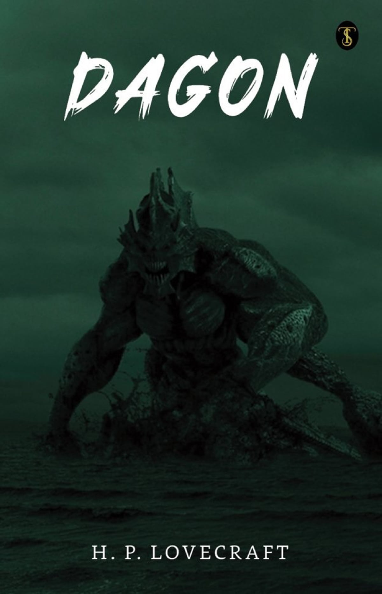

| Terror clássico |  |
| Terror clássico | |
Aqui voce encontrara uma extensa lista interligada com as obras de mais sucesso entre a categoria terror e
| Capa | Nome | Autor | Ano de lançamento | Genero | Site para compra |
|---|---|---|---|---|---|
|  | Dagon | H.P Lovecraft | 1917 | Horror Cósmica | Achou interessante? |
 |
The Cats of Ulthar | H.P Lovecraft | 1920 | Conto de fantasia | Achou interessante? |
 |
The Call of Cthulhu | H.P Lovecraft | 1926 | Horror | Achou interessante? |
 |
At the Mountains of Madness | H.P Lovecraft | 1931 | Terror | Achou interessante? |
 |
O Rei de Amarelo | Robert W.Chambers | 1895 | Terror|Conto | Achou interessante? |
| Drácula | Bram Stoker | 1897 | Terror Gótico | Achou interessante? | |
 |
O Gato Preto | Edgar Allan Poe | 1843 | Terror|Ficção Gótica | Achou interessante? |
| Psicoce | Robert Bloch | 1959 | Terror | Achou interessante? | |
| Frankenstein | Mary Shelley | 1818 | Ficção gótica|Terror | Achou interessante? |